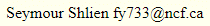

Updated October 5 2021
There are over 100,000 music files encoded in **kern data format. Many of these are accessible from the Kern Scores web site and here. **kern files notate music using the Humdrum representation described in this document. Like abc music notation, the **kern music notation is plain ascii text and any text editor can be used to create and edit these files. The web site verovio.humdrum.org provides access to many of the notated music, and shows the **kern and music score while playing it in real time.
Humdrum and **kern music notation were developed by David Huron. Humdrum is a toolkit designed for music research. Extensive documentation on this system may be found in this introduction and in Humdrum -extras.
In order to make these notated music available to a larger
community, I have converted some of the **kern files to abc
music notation using Craig Sapp's hum2abc program.
The **kern sources to sioux.abc can be found on the web page craigsapp/densmore-teton-sioux. Please scroll down for more information on the source material and how to extract it from github. The other files can be found on Kern Scores/osu/densmore.
| link to file | contents | source | encoder |
|---|---|---|---|
| pawnee.abc | Skid and Chaui Bands music | Pawnee Music | David Huron |
| sioux.abc | Teton Sioux music | Teton Sioux Music | Craig Sapp |
| ojibway.abc | Chippewa Music | Chippewa Music | Paul von Hippel and Daniel T. Shanahan |
Eva and Daniel Shanahan encoded the remaining books into **kern files, increasing the collection to more than 2000 folk songs. These are found in Shanahan's repository and described in the publication Mining Musical Traits of Social Functions in Native American Music by Daniel Shanahan, K. Neubarth, and D. Conklin. The collection of files were converted into abc music notation format using Craig Sapp's hum2abc application. Daniel Shanahan has graciously given me permission to republish this collection in abc format.
| link to file | contents | source |
|---|---|---|
| acoma.abc | Acoma, Isleta, Cochiti and ... | Densmore_1957 |
| british_columbia.abc | Indians of British Columbia | Music of the Indians of British Columbia |
| cheyenne_and_arapaho.abc | Cheyenne and Arapaho | Cheyenne and Arapaho Music |
| chippewa1.abc | Chippewa I | Songs of the Chippewa |
| chippewa2.abc | Chippewa II | Songs of the Chippewa |
| choctaw.abc | Choctaw | Choctaw Music |
| maidu.abc | Maidu | Music of the Maidu Indians (1958) |
| menominee.abc | Menominee | Menominee Music |
| nootka.abc | Nootka and Quileute | Nootka and Quileute Music |
| northern_ute.abc | Nootka and Quileute | Nootka and Quileute Music |
| papago.abc | Papago | Papago Music |
| seminole.abc | Nootka and Quileute | Seminole Music |
| yuman.abc | Nootka and Quileute | Yuman and Yaqui Music |
The Josquin Research Project was started by Jesse Rodin in 2010 in collaboration with Craig Sapp at CCARH and is now one of the largest digital database of renaissance music. The database is available in many formats including MusicXML, MIDI, mp3, and PDF. Here it is available in abc music notation files that were derived from some of the **kern files.
| link to file | composer | link to file | composer |
|---|---|---|---|
| agricola.abc | Alexander Agricola | anon.abc | Anonymous |
| brumel.abc | Antoine Brumel | busnoys.abc | Antoine Busnoys |
| compe.abc | Loyset Compère | das.abc | Ludwig Daser |
| daser.abc | Ludwig Daser | dufay.abc | Guillaume Du Fay |
| feacute.abc | Antoine de Févin | GasparOnline.abc | Gaspar van Weerbeke |
| isaac.abc | Heinrich Isaac | japart.abc | Jean Japart |
| josquin.abc | Josquin des Prez | martini.abc | Johannes Martini |
| moutin.abc | Mouton | obrecht.abc | Jacob Obrecht |
| ockeghem.abc | Johannes Oekeghem | orto.abc | Marbrianus de Orto |
| pipelar.abc | Matthaeus Pipelare | regis.abc | Johannes Regis |
| rue.abc | Pierre de la Rue | tinctoris.abc | Johannes Tinctoris |
GasparOnline.abc derived from the kern files in https://github.com/Gaspar-Online-Edition/ replaces jrp/gaspar.abc in this list.
| link to file | contents | source | encoder | updated |
|---|---|---|---|---|
| beethoven_quartets.abc | Beethoven string quartets | Craig Sapp's github | Craig Sapp | 2021.01.27 |
| beethoven_sonatas.abc | Beethoven piano sonatas | Craig Sapp's github | Craig Sapp | 2021.03.06 |
| chopinmazurkas.abc | Chopin's Mazurkas | Craig Sapp's github | Craig Sapp | 2021.03.29 |
| chopinpreludes.abc | Chopin's Preludes | Craig Sapp's github | Craig Sapp | 2021.01.25 |
| haydn_sonatas.abc | Haydn's Keyboard sonatas | Craig Sapp's github | Craig Sapp | 2021.02.22 |
| joplin.abc | Scott Joplin's ragtime | Craig Sapp's github | Craig Sapp | 2021.07.20 |
| jsbachchorales.abc | 370 Bach chorales | Craig Sapp's github | Craig Sapp | 2020 |
| mozart_sonatas.abc | 19 Mozart Piano Sonatas | Craig Sapp's github | Craig Sapp | 2021.01.15 |
| scarlatti_sonatas.abc | Selected Scarlatti Sonatas | Craig Sapp's github | Craig Sapp | 2021.06.28 |
The dates refer to when I created the abc files. If you are using runabc, EasyABC or other applications that depend on the abcmidi software, ensure that you have the latest version of abcmidi which was updated to play these files. The abc2svg JavaScript software also does a good job in rendering and playing these files; however, you need a user interface such as netabc (or runabc) to direct the individual tunes in the collection to abc2svg.
These collections have been derived from the humdrum databases created and maintained by the library of the Frederyk Chopin Institute (https://github.com/pl-wnifc. The abc translations created by hum2abc does not preserve all the information (eg lyrics are missing). Use the Humdrum Notation Plugin to access the humdrum scores.
The chopin_1stEdition.abc is a large file of over 5 megabytes, containing various published versions of Chopin's works. The repository was created by numerous encoders and editors. The compositions in the abc file are ordered by opus numbers. I had made minor modifications to the titles in the abc file so that the contents can be properly indexed. The latest release was created on October 4 2021.
The collection Polish Scores is divided into 6 large abc files listed here. (Some of the files are over 6 megabytes.) Over 100 composers are represented here. The libraries from which these collections were derived is given here which was extracted from the web page Musical scores from libraries in Poland.
| link to file | source |
|---|---|
| pl-cz.abc | Klasztor OO. Paulinów Jasna Góra, Biblioteka, Czestochowa |
| pl-kk.abc | Archives and Library of Cracow Cathedral Chapter |
| pl-kozmzk.abc | Archives and Library of Cracow Cathedral Chapter |
| pl-sa.abc | Diocesan Library in Sandomierz |
| pl-stab.abc | Benedictine nuns abbey of St. Adalbert |
| pl-wn.abc | Polish National Library, Warsaw |
| pl-wtm.abc | Warsaw Music Society |
The data is Licensed with Attribution-NonCommercial-ShareAlike 4.0 International (CC BY-NC-SA 4.0) https://creativecommons.org/licenses/by-nc-sa/4.0
